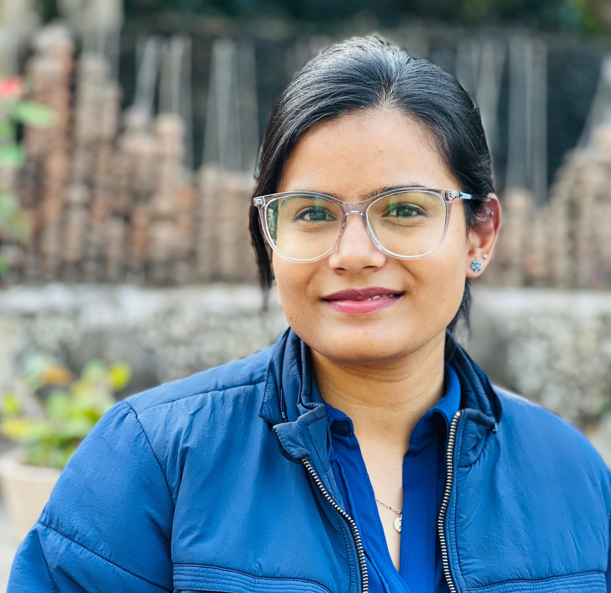
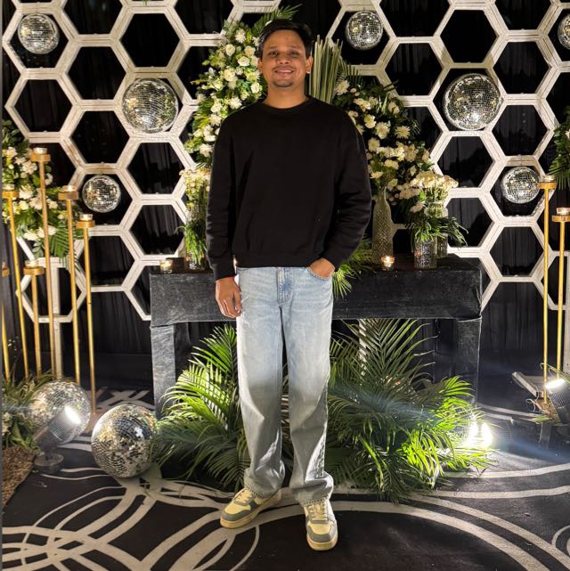

Founders & Leadership
Dr. Abhishek K. Singh
TrusteeDr. Abhishek K. Singh is a scientist in the Chemistry Department at Freie Universität Berlin, Germany. He completed his academic journey with degrees from Kirori Mal College, Delhi University, and a PhD in Chemistry from Delhi University, India. Over the years, he has received prestigious exchange fellowships, allowing him to conduct research at leading institutions in Europe, including in France and Germany. Dr. Singh's education began in Ballia district, Uttar Pradesh, where he completed his 12th grade. His journey from a small town to higher education in Berlin has given him a deep understanding of the importance of education. As the co-founder of AbhiSoch, Dr. Singh is dedicated to supporting students in rural areas by providing them with access to quality education. He uses his expertise to guide and empower these students, helping them succeed in their academic and professional lives, and creating a positive impact on their futures.
Mr. Shiva Srivastava
Chairperson & TrusteeShiva Srivastava is a dedicated education professional specializing in Adult
Education, Lifelong
Learning, and Educational Technology.
He has served as a Consultant and Junior Project Fellow at NCERT, contributing to
literacy development,
resource material creation, and national-level training initiatives. His academic work
focuses on teaching
effectiveness, Information Cômmunication Technology integration in education, lifelong
learning, and social
development.
Mr. Srivastava has actively been a member of national and international seminars,
research work and committed to advancing effective teaching practices
and lifelong learning
at the global higher education level.
Executive Member

Jagannath Satpathy
AdvisorFWO Doctoral Fellow at KU Leuven, Belgium, supported by the prestigious FWO (Flanders) Fellowship. Focused on advancing optical trapping of nanoparticles to create novel materials for photonics and biosensing applications. Passionate about optical microscopy and innovative imaging techniques. Previously worked at Freie Universität Berlin and the Max Delbrück Center for Molecular Medicine, Germany.

Mr. Abhishek Tiwari
SecretaryMr. Tiwari’s academic journey started from Sainik School, Tilaiya, Jharkhand and currently serves as a project associate at Zoological Survey of India, sponsored by the Ministry of Environment, Forest and Climate Change. He has also been associated with the Indian Institute of Technology, Madras as a project associate. Hailing from a small town of Jharkhand he aspires and envisions to bring in positive change in the lives of rural youth with his professional experience and expertise.

Mrs. Priyanka Srivastava
Member SecretaryShe has experience of teaching Hindi, SST and Music and is also known for her hardworking nature and commitment to education. She not only focuses on academic excellence but also inspires students to develop confidence and discipline. Her dedication to nurturing young minds makes her a valuable member of the team.
Mentors

Ms. Purnima Sharma
Purnima Sharma, currently employed at Sage, where she oversees the peer-review process for the humanities division.
Jenny Fehrenbacher
Jenny Fehrenbacher has been working in higher education in Germany since 2016. She is currently involved in teaching and research in the field of adult education and continuing education in southern Germany.
Dr. Rajneesh Gupta
Dr. Rajanish Gupta holds a Ph.D. in English and is a certified expert in the German language. A multifaceted personality, he is passionate about yoga and music, blending intellectual and holistic pursuits in his daily life. Driven by a commitment to helping people, Dr. Gupta offers expertise in career counseling, as well as teaching German and English, fostering global and cosmopolitan thinking.
Dr. Ragini Kesari
Dr. Kumari is a disciple of Vidushi Shruti Sadolikar Katkar - A renowned artist, a renowned artist of Jaipur-Atrauli gharana. She obtained her PhD in hindustani classical music from University of Delhi. She is a graded artist of All India Radio, Delhi. She also taught at Shyama Prasad Mukherjee college for women, Delhi University. She teaches hindustani classical music and light music.
Technical

Gaurav Singh Chauhan
Full Stack EngineerGaurav Singh Chauhan serves as the Technical Member of AbhiSoch. He is responsible for managing the organization's technical and digital activities, including website development, maintenance, and online communication. Through his technical expertise, he helps strengthen the trust’s digital presence and ensures that information about its initiatives reaches a wider audience. He is committed to supporting the mission of the trust by using technology to make its services more accessible and effective.